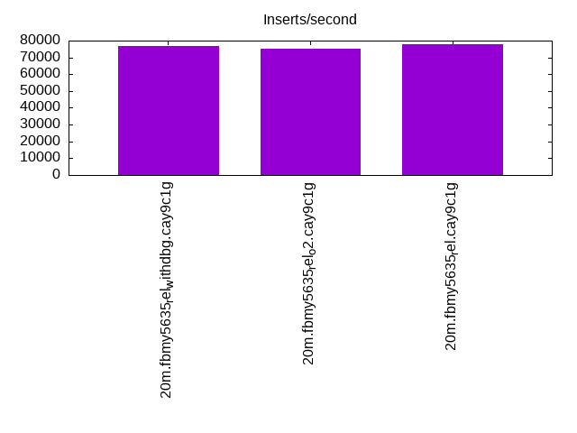
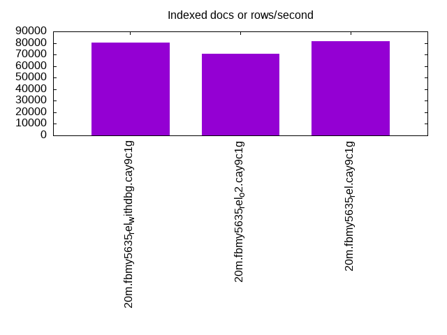
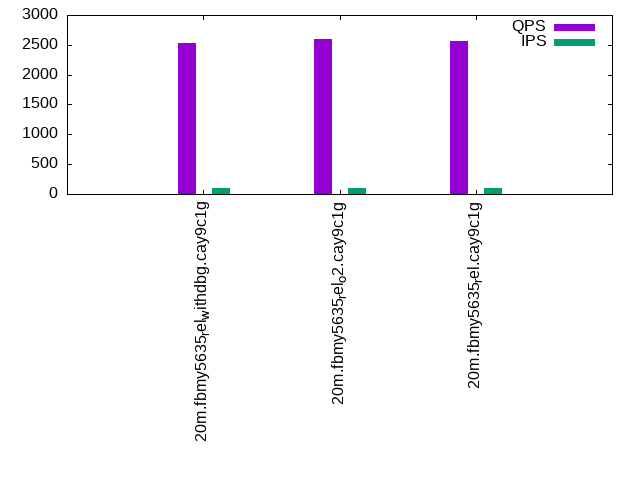
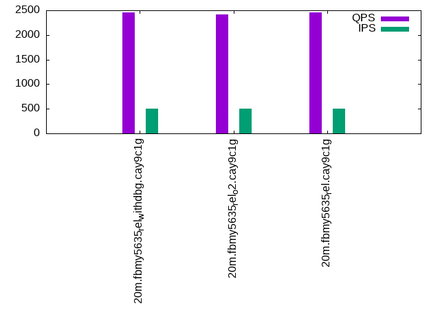
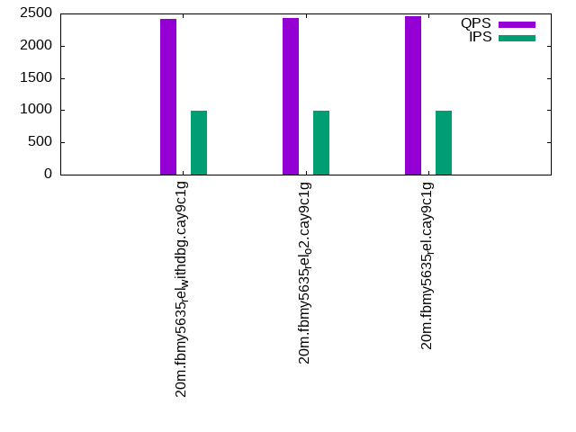

This is a report for the insert benchmark with 20M docs and 1 client(s). It is generated by scripts (bash, awk, sed) and Tufte might not be impressed. An overview of the insert benchmark is here and a short update is here. Below, by DBMS, I mean DBMS+version.config. An example is my8020.c10b40 where my means MySQL, 8020 is version 8.0.20 and c10b40 is the name for the configuration file.
The test server has 8 AMD cores, 16G RAM and an NVMe SSD. It is described here as the Beelink. The benchmark was run with 1 client and there were 1 or 2 connections per client (1 for queries, 1 for inserts). The benchmark loads 20M rows without secondary indexes, creates secondary indexes, loads another 20M rows then does 3 read+write tests for one hour each that do queries as fast as possible with 100, 500 and then 1000 writes/second/client concurrent with the queries. There is one table per client. The database is cached by the OS page cache but not by the storage engine. Clients and the DBMS share one server. The per-database configs are in the per-database subdirectories here.
The tested DBMS are:
The numbers are inserts/s for l.i0 and l.i1, indexed docs (or rows) /s for l.x and queries/s for q*.2. The values are the average rate over the entire test for inserts (IPS) and queries (QPS). The range of values for IPS and QPS is split into 3 parts: bottom 25%, middle 50%, top 25%. Values in the bottom 25% have a red background, values in the top 25% have a green background and values in the middle have no color. A gray background is used for values that can be ignored because the DBMS did not sustain the target insert rate. Red backgrounds are not used when the minimum value is within 80% of the max value.
| dbms | l.i0 | l.x | l.i1 | q100.1 | q500.1 | q1000.1 |
|---|---|---|---|---|---|---|
| 20m.fbmy5635_rel_withdbg.cay9c1g | 76628 | 80080 | 29112 | 2525 | 2456 | 2418 |
| 20m.fbmy5635_rel_o2.cay9c1g | 74906 | 70775 | 29112 | 2592 | 2418 | 2425 |
| 20m.fbmy5635_rel.cay9c1g | 77821 | 81376 | 29498 | 2566 | 2456 | 2465 |
This table has relative throughput, throughput for the DBMS relative to the DBMS in the first line, using the absolute throughput from the previous table.
| dbms | l.i0 | l.x | l.i1 | q100.1 | q500.1 | q1000.1 |
|---|---|---|---|---|---|---|
| 20m.fbmy5635_rel_withdbg.cay9c1g | 1.00 | 1.00 | 1.00 | 1.00 | 1.00 | 1.00 |
| 20m.fbmy5635_rel_o2.cay9c1g | 0.98 | 0.88 | 1.00 | 1.03 | 0.98 | 1.00 |
| 20m.fbmy5635_rel.cay9c1g | 1.02 | 1.02 | 1.01 | 1.02 | 1.00 | 1.02 |
This lists the average rate of inserts/s for the tests that do inserts concurrent with queries. For such tests the query rate is listed in the table above. The read+write tests are setup so that the insert rate should match the target rate every second. Cells that are not at least 95% of the target have a red background to indicate a failure to satisfy the target.
| dbms | q100.1 | q500.1 | q1000.1 |
|---|---|---|---|
| fbmy5635_rel_withdbg.cay9c1g | 100 | 499 | 998 |
| fbmy5635_rel_o2.cay9c1g | 100 | 499 | 998 |
| fbmy5635_rel.cay9c1g | 100 | 499 | 998 |
| target | 100 | 500 | 1000 |
l.i0: load without secondary indexes. Graphs for performance per 1-second interval are here.
Average throughput:
Insert response time histogram: each cell has the percentage of responses that take <= the time in the header and max is the max response time in seconds. For the max column values in the top 25% of the range have a red background and in the bottom 25% of the range have a green background. The red background is not used when the min value is within 80% of the max value.
| dbms | 256us | 1ms | 4ms | 16ms | 64ms | 256ms | 1s | 4s | 16s | gt | max |
|---|---|---|---|---|---|---|---|---|---|---|---|
| fbmy5635_rel_withdbg.cay9c1g | 99.865 | 0.130 | 0.005 | 0.063 | |||||||
| fbmy5635_rel_o2.cay9c1g | 99.864 | 0.133 | 0.003 | 0.001 | 0.068 | ||||||
| fbmy5635_rel.cay9c1g | 99.869 | 0.128 | 0.003 | 0.001 | 0.065 |
Performance metrics for the DBMS listed above. Some are normalized by throughput, others are not. Legend for results is here.
ips qps rps rmbps wps wmbps rpq rkbpq wpi wkbpi csps cpups cspq cpupq dbgb1 dbgb2 rss maxop p50 p99 tag 76628 0 0 0.0 37.8 13.0 0.000 0.000 0.000 0.174 7522 22.7 0.098 24 0.7 1.8 0.2 0.063 77408 68992 20m.fbmy5635_rel_withdbg.cay9c1g 74906 0 0 0.0 36.8 12.7 0.000 0.000 0.000 0.174 7404 21.6 0.099 23 0.7 1.8 0.3 0.068 75610 68421 20m.fbmy5635_rel_o2.cay9c1g 77821 0 0 0.0 38.1 13.2 0.000 0.000 0.000 0.174 7656 23.3 0.098 24 0.7 1.8 0.2 0.065 78614 71619 20m.fbmy5635_rel.cay9c1g
l.x: create secondary indexes.
Average throughput:
Performance metrics for the DBMS listed above. Some are normalized by throughput, others are not. Legend for results is here.
ips qps rps rmbps wps wmbps rpq rkbpq wpi wkbpi csps cpups cspq cpupq dbgb1 dbgb2 rss maxop p50 p99 tag 80080 0 0 0.0 32.6 12.2 0.000 0.000 0.000 0.156 246 12.7 0.003 13 1.5 2.5 1.3 0.007 NA NA 20m.fbmy5635_rel_withdbg.cay9c1g 70775 0 0 0.0 27.7 10.7 0.000 0.000 0.000 0.155 223 12.7 0.003 14 1.5 2.5 1.3 0.007 NA NA 20m.fbmy5635_rel_o2.cay9c1g 81376 0 0 0.0 32.1 12.4 0.000 0.000 0.000 0.156 244 12.7 0.003 12 1.5 2.5 1.2 0.007 NA NA 20m.fbmy5635_rel.cay9c1g
l.i1: continue load after secondary indexes created. Graphs for performance per 1-second interval are here.
Average throughput:
Insert response time histogram: each cell has the percentage of responses that take <= the time in the header and max is the max response time in seconds. For the max column values in the top 25% of the range have a red background and in the bottom 25% of the range have a green background. The red background is not used when the min value is within 80% of the max value.
| dbms | 256us | 1ms | 4ms | 16ms | 64ms | 256ms | 1s | 4s | 16s | gt | max |
|---|---|---|---|---|---|---|---|---|---|---|---|
| fbmy5635_rel_withdbg.cay9c1g | 99.826 | 0.171 | 0.003 | 0.001 | 0.077 | ||||||
| fbmy5635_rel_o2.cay9c1g | 99.827 | 0.169 | 0.004 | 0.063 | |||||||
| fbmy5635_rel.cay9c1g | 99.827 | 0.169 | 0.003 | nonzero | 0.081 |
Performance metrics for the DBMS listed above. Some are normalized by throughput, others are not. Legend for results is here.
ips qps rps rmbps wps wmbps rpq rkbpq wpi wkbpi csps cpups cspq cpupq dbgb1 dbgb2 rss maxop p50 p99 tag 29112 0 9 1.1 73.6 29.0 0.000 0.038 0.003 1.021 6123 28.8 0.210 79 2.9 4.6 1.3 0.077 28731 25870 20m.fbmy5635_rel_withdbg.cay9c1g 29112 0 9 1.1 73.0 28.9 0.000 0.038 0.003 1.017 6100 29.0 0.210 80 3.0 4.8 1.3 0.063 28817 25881 20m.fbmy5635_rel_o2.cay9c1g 29498 0 9 1.1 75.0 29.6 0.000 0.038 0.003 1.027 6221 28.9 0.211 78 2.9 4.7 1.3 0.081 29233 26121 20m.fbmy5635_rel.cay9c1g
q100.1: range queries with 100 insert/s per client. Graphs for performance per 1-second interval are here.
Average throughput:
Query response time histogram: each cell has the percentage of responses that take <= the time in the header and max is the max response time in seconds. For max values in the top 25% of the range have a red background and in the bottom 25% of the range have a green background. The red background is not used when the min value is within 80% of the max value.
| dbms | 256us | 1ms | 4ms | 16ms | 64ms | 256ms | 1s | 4s | 16s | gt | max |
|---|---|---|---|---|---|---|---|---|---|---|---|
| fbmy5635_rel_withdbg.cay9c1g | 0.969 | 99.030 | 0.001 | 0.004 | |||||||
| fbmy5635_rel_o2.cay9c1g | 1.105 | 98.894 | 0.001 | nonzero | 0.029 | ||||||
| fbmy5635_rel.cay9c1g | 1.269 | 98.731 | 0.001 | 0.003 |
Insert response time histogram: each cell has the percentage of responses that take <= the time in the header and max is the max response time in seconds. For max values in the top 25% of the range have a red background and in the bottom 25% of the range have a green background. The red background is not used when the min value is within 80% of the max value.
| dbms | 256us | 1ms | 4ms | 16ms | 64ms | 256ms | 1s | 4s | 16s | gt | max |
|---|---|---|---|---|---|---|---|---|---|---|---|
| fbmy5635_rel_withdbg.cay9c1g | 99.444 | 0.556 | 0.009 | ||||||||
| fbmy5635_rel_o2.cay9c1g | 99.583 | 0.417 | 0.009 | ||||||||
| fbmy5635_rel.cay9c1g | 99.667 | 0.333 | 0.009 |
Performance metrics for the DBMS listed above. Some are normalized by throughput, others are not. Legend for results is here.
ips qps rps rmbps wps wmbps rpq rkbpq wpi wkbpi csps cpups cspq cpupq dbgb1 dbgb2 rss maxop p50 p99 tag 100 2525 0 0.0 3.8 0.2 0.000 0.000 0.038 2.369 9752 13.1 3.862 415 2.8 4.6 1.7 0.004 2511 2397 20m.fbmy5635_rel_withdbg.cay9c1g 100 2592 0 0.0 4.0 0.3 0.000 0.000 0.040 3.115 10014 13.3 3.864 411 2.8 4.6 1.6 0.029 2589 2445 20m.fbmy5635_rel_o2.cay9c1g 100 2566 0 0.0 3.8 0.2 0.000 0.000 0.038 2.201 9911 13.3 3.862 415 2.8 4.6 1.6 0.003 2557 2429 20m.fbmy5635_rel.cay9c1g
q500.1: range queries with 500 insert/s per client. Graphs for performance per 1-second interval are here.
Average throughput:
Query response time histogram: each cell has the percentage of responses that take <= the time in the header and max is the max response time in seconds. For max values in the top 25% of the range have a red background and in the bottom 25% of the range have a green background. The red background is not used when the min value is within 80% of the max value.
| dbms | 256us | 1ms | 4ms | 16ms | 64ms | 256ms | 1s | 4s | 16s | gt | max |
|---|---|---|---|---|---|---|---|---|---|---|---|
| fbmy5635_rel_withdbg.cay9c1g | 1.145 | 98.855 | nonzero | 0.003 | |||||||
| fbmy5635_rel_o2.cay9c1g | 1.021 | 98.979 | nonzero | 0.002 | |||||||
| fbmy5635_rel.cay9c1g | 0.901 | 99.099 | nonzero | nonzero | 0.005 |
Insert response time histogram: each cell has the percentage of responses that take <= the time in the header and max is the max response time in seconds. For max values in the top 25% of the range have a red background and in the bottom 25% of the range have a green background. The red background is not used when the min value is within 80% of the max value.
| dbms | 256us | 1ms | 4ms | 16ms | 64ms | 256ms | 1s | 4s | 16s | gt | max |
|---|---|---|---|---|---|---|---|---|---|---|---|
| fbmy5635_rel_withdbg.cay9c1g | 99.667 | 0.333 | 0.009 | ||||||||
| fbmy5635_rel_o2.cay9c1g | 99.744 | 0.256 | 0.008 | ||||||||
| fbmy5635_rel.cay9c1g | 99.722 | 0.278 | 0.009 |
Performance metrics for the DBMS listed above. Some are normalized by throughput, others are not. Legend for results is here.
ips qps rps rmbps wps wmbps rpq rkbpq wpi wkbpi csps cpups cspq cpupq dbgb1 dbgb2 rss maxop p50 p99 tag 499 2456 0 0.0 3.7 0.3 0.000 0.000 0.007 0.569 9559 13.1 3.893 427 2.9 4.8 1.5 0.003 2445 2301 20m.fbmy5635_rel_withdbg.cay9c1g 499 2418 0 0.0 3.6 0.2 0.000 0.000 0.007 0.406 9420 13.1 3.896 433 2.9 4.8 1.5 0.002 2413 2253 20m.fbmy5635_rel_o2.cay9c1g 499 2456 0 0.0 3.7 0.3 0.000 0.000 0.007 0.568 9561 13.3 3.892 433 2.9 4.8 1.4 0.005 2445 2301 20m.fbmy5635_rel.cay9c1g
q1000.1: range queries with 1000 insert/s per client. Graphs for performance per 1-second interval are here.
Average throughput:
Query response time histogram: each cell has the percentage of responses that take <= the time in the header and max is the max response time in seconds. For max values in the top 25% of the range have a red background and in the bottom 25% of the range have a green background. The red background is not used when the min value is within 80% of the max value.
| dbms | 256us | 1ms | 4ms | 16ms | 64ms | 256ms | 1s | 4s | 16s | gt | max |
|---|---|---|---|---|---|---|---|---|---|---|---|
| fbmy5635_rel_withdbg.cay9c1g | 0.957 | 99.042 | nonzero | nonzero | 0.005 | ||||||
| fbmy5635_rel_o2.cay9c1g | 1.007 | 98.992 | nonzero | 0.003 | |||||||
| fbmy5635_rel.cay9c1g | 1.117 | 98.883 | nonzero | 0.003 |
Insert response time histogram: each cell has the percentage of responses that take <= the time in the header and max is the max response time in seconds. For max values in the top 25% of the range have a red background and in the bottom 25% of the range have a green background. The red background is not used when the min value is within 80% of the max value.
| dbms | 256us | 1ms | 4ms | 16ms | 64ms | 256ms | 1s | 4s | 16s | gt | max |
|---|---|---|---|---|---|---|---|---|---|---|---|
| fbmy5635_rel_withdbg.cay9c1g | 99.725 | 0.275 | 0.013 | ||||||||
| fbmy5635_rel_o2.cay9c1g | 99.700 | 0.297 | 0.003 | 0.016 | |||||||
| fbmy5635_rel.cay9c1g | 99.761 | 0.239 | 0.011 |
Performance metrics for the DBMS listed above. Some are normalized by throughput, others are not. Legend for results is here.
ips qps rps rmbps wps wmbps rpq rkbpq wpi wkbpi csps cpups cspq cpupq dbgb1 dbgb2 rss maxop p50 p99 tag 998 2418 0 0.0 5.1 0.8 0.000 0.000 0.005 0.844 9519 14.1 3.936 466 3.1 3.2 1.4 0.005 2413 2253 20m.fbmy5635_rel_withdbg.cay9c1g 998 2425 0 0.0 5.2 0.9 0.000 0.000 0.005 0.878 9550 14.2 3.937 468 3.1 3.2 1.4 0.003 2429 2253 20m.fbmy5635_rel_o2.cay9c1g 998 2465 0 0.0 5.0 0.8 0.000 0.000 0.005 0.796 9697 14.1 3.934 458 3.1 3.2 1.3 0.003 2461 2301 20m.fbmy5635_rel.cay9c1g
l.i0: load without secondary indexes
Performance metrics for all DBMS, not just the ones listed above. Some are normalized by throughput, others are not. Legend for results is here.
ips qps rps rmbps wps wmbps rpq rkbpq wpi wkbpi csps cpups cspq cpupq dbgb1 dbgb2 rss maxop p50 p99 tag 76628 0 0 0.0 37.8 13.0 0.000 0.000 0.000 0.174 7522 22.7 0.098 24 0.7 1.8 0.2 0.063 77408 68992 20m.fbmy5635_rel_withdbg.cay9c1g 74906 0 0 0.0 36.8 12.7 0.000 0.000 0.000 0.174 7404 21.6 0.099 23 0.7 1.8 0.3 0.068 75610 68421 20m.fbmy5635_rel_o2.cay9c1g 77821 0 0 0.0 38.1 13.2 0.000 0.000 0.000 0.174 7656 23.3 0.098 24 0.7 1.8 0.2 0.065 78614 71619 20m.fbmy5635_rel.cay9c1g
l.x: create secondary indexes
Performance metrics for all DBMS, not just the ones listed above. Some are normalized by throughput, others are not. Legend for results is here.
ips qps rps rmbps wps wmbps rpq rkbpq wpi wkbpi csps cpups cspq cpupq dbgb1 dbgb2 rss maxop p50 p99 tag 80080 0 0 0.0 32.6 12.2 0.000 0.000 0.000 0.156 246 12.7 0.003 13 1.5 2.5 1.3 0.007 NA NA 20m.fbmy5635_rel_withdbg.cay9c1g 70775 0 0 0.0 27.7 10.7 0.000 0.000 0.000 0.155 223 12.7 0.003 14 1.5 2.5 1.3 0.007 NA NA 20m.fbmy5635_rel_o2.cay9c1g 81376 0 0 0.0 32.1 12.4 0.000 0.000 0.000 0.156 244 12.7 0.003 12 1.5 2.5 1.2 0.007 NA NA 20m.fbmy5635_rel.cay9c1g
l.i1: continue load after secondary indexes created
Performance metrics for all DBMS, not just the ones listed above. Some are normalized by throughput, others are not. Legend for results is here.
ips qps rps rmbps wps wmbps rpq rkbpq wpi wkbpi csps cpups cspq cpupq dbgb1 dbgb2 rss maxop p50 p99 tag 29112 0 9 1.1 73.6 29.0 0.000 0.038 0.003 1.021 6123 28.8 0.210 79 2.9 4.6 1.3 0.077 28731 25870 20m.fbmy5635_rel_withdbg.cay9c1g 29112 0 9 1.1 73.0 28.9 0.000 0.038 0.003 1.017 6100 29.0 0.210 80 3.0 4.8 1.3 0.063 28817 25881 20m.fbmy5635_rel_o2.cay9c1g 29498 0 9 1.1 75.0 29.6 0.000 0.038 0.003 1.027 6221 28.9 0.211 78 2.9 4.7 1.3 0.081 29233 26121 20m.fbmy5635_rel.cay9c1g
q100.1: range queries with 100 insert/s per client
Performance metrics for all DBMS, not just the ones listed above. Some are normalized by throughput, others are not. Legend for results is here.
ips qps rps rmbps wps wmbps rpq rkbpq wpi wkbpi csps cpups cspq cpupq dbgb1 dbgb2 rss maxop p50 p99 tag 100 2525 0 0.0 3.8 0.2 0.000 0.000 0.038 2.369 9752 13.1 3.862 415 2.8 4.6 1.7 0.004 2511 2397 20m.fbmy5635_rel_withdbg.cay9c1g 100 2592 0 0.0 4.0 0.3 0.000 0.000 0.040 3.115 10014 13.3 3.864 411 2.8 4.6 1.6 0.029 2589 2445 20m.fbmy5635_rel_o2.cay9c1g 100 2566 0 0.0 3.8 0.2 0.000 0.000 0.038 2.201 9911 13.3 3.862 415 2.8 4.6 1.6 0.003 2557 2429 20m.fbmy5635_rel.cay9c1g
q500.1: range queries with 500 insert/s per client
Performance metrics for all DBMS, not just the ones listed above. Some are normalized by throughput, others are not. Legend for results is here.
ips qps rps rmbps wps wmbps rpq rkbpq wpi wkbpi csps cpups cspq cpupq dbgb1 dbgb2 rss maxop p50 p99 tag 499 2456 0 0.0 3.7 0.3 0.000 0.000 0.007 0.569 9559 13.1 3.893 427 2.9 4.8 1.5 0.003 2445 2301 20m.fbmy5635_rel_withdbg.cay9c1g 499 2418 0 0.0 3.6 0.2 0.000 0.000 0.007 0.406 9420 13.1 3.896 433 2.9 4.8 1.5 0.002 2413 2253 20m.fbmy5635_rel_o2.cay9c1g 499 2456 0 0.0 3.7 0.3 0.000 0.000 0.007 0.568 9561 13.3 3.892 433 2.9 4.8 1.4 0.005 2445 2301 20m.fbmy5635_rel.cay9c1g
q1000.1: range queries with 1000 insert/s per client
Performance metrics for all DBMS, not just the ones listed above. Some are normalized by throughput, others are not. Legend for results is here.
ips qps rps rmbps wps wmbps rpq rkbpq wpi wkbpi csps cpups cspq cpupq dbgb1 dbgb2 rss maxop p50 p99 tag 998 2418 0 0.0 5.1 0.8 0.000 0.000 0.005 0.844 9519 14.1 3.936 466 3.1 3.2 1.4 0.005 2413 2253 20m.fbmy5635_rel_withdbg.cay9c1g 998 2425 0 0.0 5.2 0.9 0.000 0.000 0.005 0.878 9550 14.2 3.937 468 3.1 3.2 1.4 0.003 2429 2253 20m.fbmy5635_rel_o2.cay9c1g 998 2465 0 0.0 5.0 0.8 0.000 0.000 0.005 0.796 9697 14.1 3.934 458 3.1 3.2 1.3 0.003 2461 2301 20m.fbmy5635_rel.cay9c1g
Insert response time histogram
256us 1ms 4ms 16ms 64ms 256ms 1s 4s 16s gt max tag 0.000 0.000 99.865 0.130 0.005 0.000 0.000 0.000 0.000 0.000 0.063 fbmy5635_rel_withdbg.cay9c1g 0.000 0.000 99.864 0.133 0.003 0.001 0.000 0.000 0.000 0.000 0.068 fbmy5635_rel_o2.cay9c1g 0.000 0.000 99.869 0.128 0.003 0.001 0.000 0.000 0.000 0.000 0.065 fbmy5635_rel.cay9c1g
TODO - determine whether there is data for create index response time
Insert response time histogram
256us 1ms 4ms 16ms 64ms 256ms 1s 4s 16s gt max tag 0.000 0.000 99.826 0.171 0.003 0.001 0.000 0.000 0.000 0.000 0.077 fbmy5635_rel_withdbg.cay9c1g 0.000 0.000 99.827 0.169 0.004 0.000 0.000 0.000 0.000 0.000 0.063 fbmy5635_rel_o2.cay9c1g 0.000 0.000 99.827 0.169 0.003 nonzero 0.000 0.000 0.000 0.000 0.081 fbmy5635_rel.cay9c1g
Query response time histogram
256us 1ms 4ms 16ms 64ms 256ms 1s 4s 16s gt max tag 0.969 99.030 0.001 0.000 0.000 0.000 0.000 0.000 0.000 0.000 0.004 fbmy5635_rel_withdbg.cay9c1g 1.105 98.894 0.001 0.000 nonzero 0.000 0.000 0.000 0.000 0.000 0.029 fbmy5635_rel_o2.cay9c1g 1.269 98.731 0.001 0.000 0.000 0.000 0.000 0.000 0.000 0.000 0.003 fbmy5635_rel.cay9c1g
Insert response time histogram
256us 1ms 4ms 16ms 64ms 256ms 1s 4s 16s gt max tag 0.000 0.000 99.444 0.556 0.000 0.000 0.000 0.000 0.000 0.000 0.009 fbmy5635_rel_withdbg.cay9c1g 0.000 0.000 99.583 0.417 0.000 0.000 0.000 0.000 0.000 0.000 0.009 fbmy5635_rel_o2.cay9c1g 0.000 0.000 99.667 0.333 0.000 0.000 0.000 0.000 0.000 0.000 0.009 fbmy5635_rel.cay9c1g
Query response time histogram
256us 1ms 4ms 16ms 64ms 256ms 1s 4s 16s gt max tag 1.145 98.855 nonzero 0.000 0.000 0.000 0.000 0.000 0.000 0.000 0.003 fbmy5635_rel_withdbg.cay9c1g 1.021 98.979 nonzero 0.000 0.000 0.000 0.000 0.000 0.000 0.000 0.002 fbmy5635_rel_o2.cay9c1g 0.901 99.099 nonzero nonzero 0.000 0.000 0.000 0.000 0.000 0.000 0.005 fbmy5635_rel.cay9c1g
Insert response time histogram
256us 1ms 4ms 16ms 64ms 256ms 1s 4s 16s gt max tag 0.000 0.000 99.667 0.333 0.000 0.000 0.000 0.000 0.000 0.000 0.009 fbmy5635_rel_withdbg.cay9c1g 0.000 0.000 99.744 0.256 0.000 0.000 0.000 0.000 0.000 0.000 0.008 fbmy5635_rel_o2.cay9c1g 0.000 0.000 99.722 0.278 0.000 0.000 0.000 0.000 0.000 0.000 0.009 fbmy5635_rel.cay9c1g
Query response time histogram
256us 1ms 4ms 16ms 64ms 256ms 1s 4s 16s gt max tag 0.957 99.042 nonzero nonzero 0.000 0.000 0.000 0.000 0.000 0.000 0.005 fbmy5635_rel_withdbg.cay9c1g 1.007 98.992 nonzero 0.000 0.000 0.000 0.000 0.000 0.000 0.000 0.003 fbmy5635_rel_o2.cay9c1g 1.117 98.883 nonzero 0.000 0.000 0.000 0.000 0.000 0.000 0.000 0.003 fbmy5635_rel.cay9c1g
Insert response time histogram
256us 1ms 4ms 16ms 64ms 256ms 1s 4s 16s gt max tag 0.000 0.000 99.725 0.275 0.000 0.000 0.000 0.000 0.000 0.000 0.013 fbmy5635_rel_withdbg.cay9c1g 0.000 0.000 99.700 0.297 0.003 0.000 0.000 0.000 0.000 0.000 0.016 fbmy5635_rel_o2.cay9c1g 0.000 0.000 99.761 0.239 0.000 0.000 0.000 0.000 0.000 0.000 0.011 fbmy5635_rel.cay9c1g